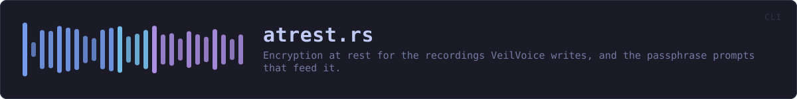

crates/veilvoice-cli/src/atrest.rs
veilvoice-cli · 455 lines · read the source here · or on GitHub
Encryption at rest for the recordings VeilVoice writes, and the passphrase prompts that feed it.
Why this is the default
De-identification and confidentiality are different problems, and VeilVoice only solves the first: the words survive on purpose, so a veiled recording sitting on disk is still a recording of everything that was said. Writing it in the clear by default would quietly leave the second problem unsolved for everyone who did not think to ask.
So the result is sealed into a container, with Argon2id or the X25519 plus ML-KEM-768 hybrid, unless the user asks for plaintext, and asking for plaintext prints PLAINTEXT_WARNING and, on a terminal, waits for an answer.
Never through a plaintext file
The WAV is encoded in memory and sealed there. It is never written to disk and then encrypted, because a plaintext file that is created and deleted is precisely what veilvoice_crypto::shred explains cannot be reliably taken back on flash storage.
In plain words
Asks for a passphrase and encrypts the recording VeilVoice has just written.
It is on by default, and the reason is worth stating: the words survive de-identification on purpose, so an unencrypted result is still a recording of everything that was said. Veiling the voice and leaving the file open protects the speaker and not the conversation.
Writing one unencrypted is allowed, and asks first.
WHAT THIS FILE CONTAINS
455 lines defining 7 functions (4 public), 1 type and 1 constant. Everything below is read out of the source, so it cannot disagree with the code.
The types it owns.
enum Recipientline 63 · How a recording is to be sealed.
What happens when it runs. These are the ways in: public, and nothing else in this file calls them, so they are what an outside caller reaches first.
seal_to_diskline 71 · Seal plaintext and write it to <path>.veil, returning where it landed.
reachesread_new_password,can_prompt,into_secret,no_terminalconfirm_plaintextline 121 · Print the plaintext warning and, on an interactive terminal, require an explicit answer before continuing.prompt_secretline 242 · Prompt once, without echoing, and keep the answer in a Secret.
reachescan_prompt,into_secret,no_terminal
WHAT CALLS WHAT
The functions this file defines, and the calls between them. An edge means the callee's name appears, called, inside the caller's body. This is a syntactic reading, not a type-resolved one.
The same graph as Mermaid source
%%{init: {"theme":"base","themeVariables":{"background":"#1a1b26","primaryColor":"#1f2335","primaryTextColor":"#c0caf5","primaryBorderColor":"#7aa2f7","secondaryColor":"#16161e","tertiaryColor":"#16161e","lineColor":"#737aa2","textColor":"#c0caf5","mainBkg":"#1f2335","nodeBorder":"#7aa2f7","clusterBkg":"#16161e","clusterBorder":"#2f3549","fontFamily":"ui-monospace, SFMono-Regular, Consolas, monospace","fontSize":"14px"}}}%%
flowchart TD
n_seal_to_disk(["seal_to_disk<br/>line 71"])
n_confirm_plaintext(["confirm_plaintext<br/>line 121"])
n_into_secret["into_secret<br/>line 164"]
n_no_terminal["no_terminal<br/>line 191"]
n_can_prompt["can_prompt<br/>line 237"]
n_prompt_secret(["prompt_secret<br/>line 242"])
n_read_new_password["read_new_password<br/>line 251"]
n_prompt_secret --> n_can_prompt
n_prompt_secret --> n_into_secret
n_prompt_secret --> n_no_terminal
n_read_new_password --> n_can_prompt
n_read_new_password --> n_into_secret
n_read_new_password --> n_no_terminal
n_seal_to_disk --> n_read_new_password
click n_seal_to_disk href "https://github.com/tilas01/veilvoice/blob/main/crates/veilvoice-cli/src/atrest.rs#L71" "open the source"
click n_confirm_plaintext href "https://github.com/tilas01/veilvoice/blob/main/crates/veilvoice-cli/src/atrest.rs#L121" "open the source"
click n_into_secret href "https://github.com/tilas01/veilvoice/blob/main/crates/veilvoice-cli/src/atrest.rs#L164" "open the source"
click n_no_terminal href "https://github.com/tilas01/veilvoice/blob/main/crates/veilvoice-cli/src/atrest.rs#L191" "open the source"
click n_can_prompt href "https://github.com/tilas01/veilvoice/blob/main/crates/veilvoice-cli/src/atrest.rs#L237" "open the source"
click n_prompt_secret href "https://github.com/tilas01/veilvoice/blob/main/crates/veilvoice-cli/src/atrest.rs#L242" "open the source"
click n_read_new_password href "https://github.com/tilas01/veilvoice/blob/main/crates/veilvoice-cli/src/atrest.rs#L251" "open the source"
classDef entry fill:#1f2335,stroke:#7aa2f7,color:#c0caf5
class n_seal_to_disk,n_confirm_plaintext,n_prompt_secret entry
classDef api fill:#1f2335,stroke:#7dcfff,color:#c0caf5
class n_read_new_password api
classDef helper fill:#1f2335,stroke:#bb9af7,color:#c0caf5
class n_into_secret,n_no_terminal,n_can_prompt helperThis site loads no third-party script, so it cannot run Mermaid; the diagram above is the same nodes and edges drawn by the generator instead. GitHub renders the source below directly.
ITEMS
| Item | Line | Documentation |
|---|---|---|
PLAINTEXT_WARNING pub const | 46 | What the user is told before a recording is written in the clear. |
Recipient pub enum | 63 | How a recording is to be sealed. |
seal_to_disk pub fn | 71 | Seal plaintext and write it to <path>.veil, returning where it landed. |
confirm_plaintext pub fn | 121 | Print the plaintext warning and, on an interactive terminal, require an explicit answer before continuing. |
into_secret fn | 164 | Move a typed password into page-locked, zeroizing storage, wiping the String it arrived in. |
no_terminal fn | 191 | What to say when there is no terminal to ask on. |
can_prompt fn | 237 | Whether a passphrase can be asked for at all. |
prompt_secret pub fn | 242 | Prompt once, without echoing, and keep the answer in a Secret. |
read_new_password pub fn | 251 | Read a password twice, without echoing it, and check the two agree. |
no_terminal_tests mod | 364 |